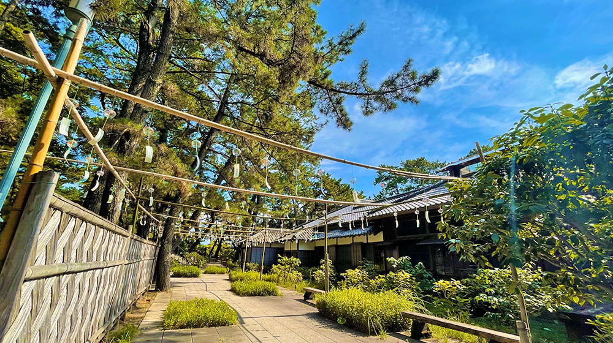
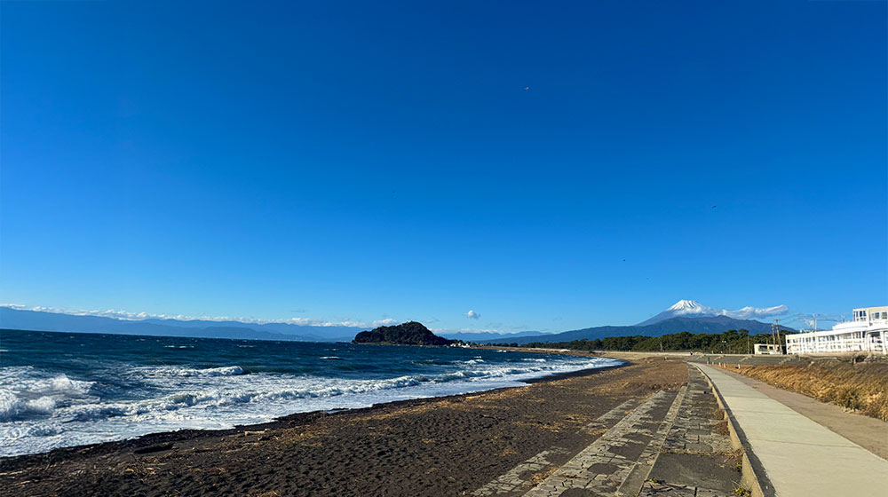
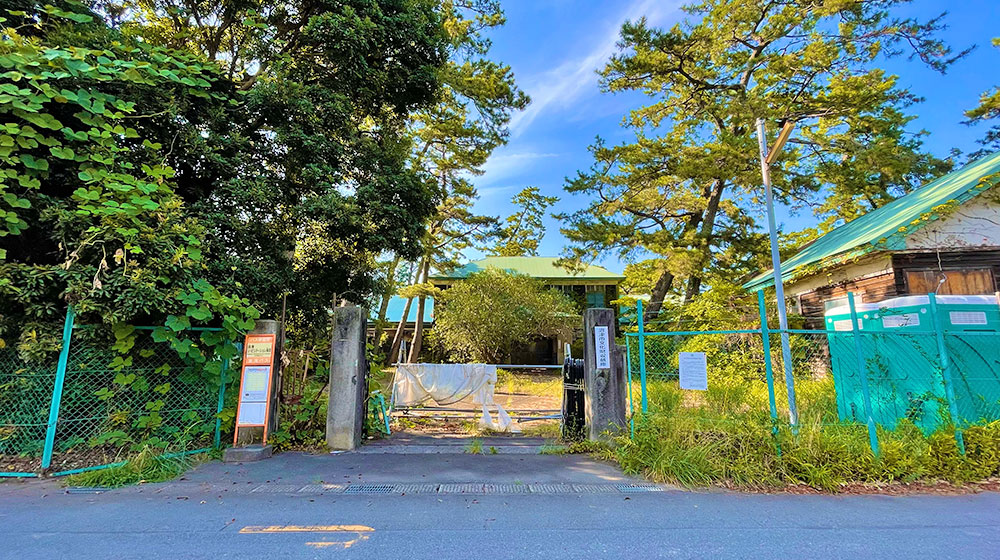
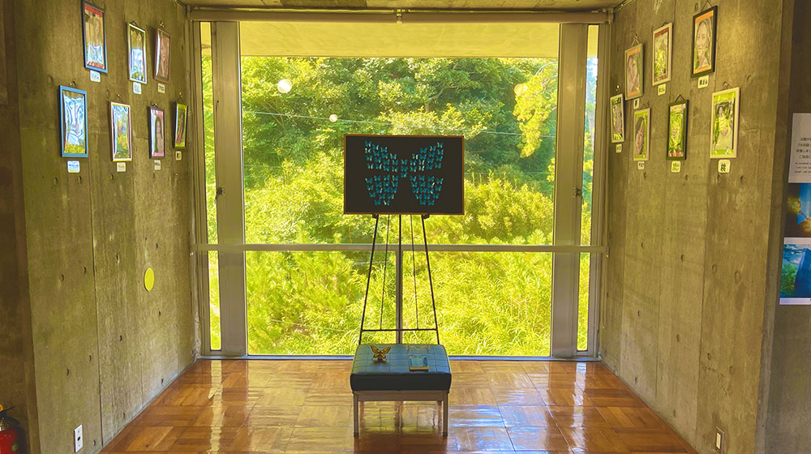
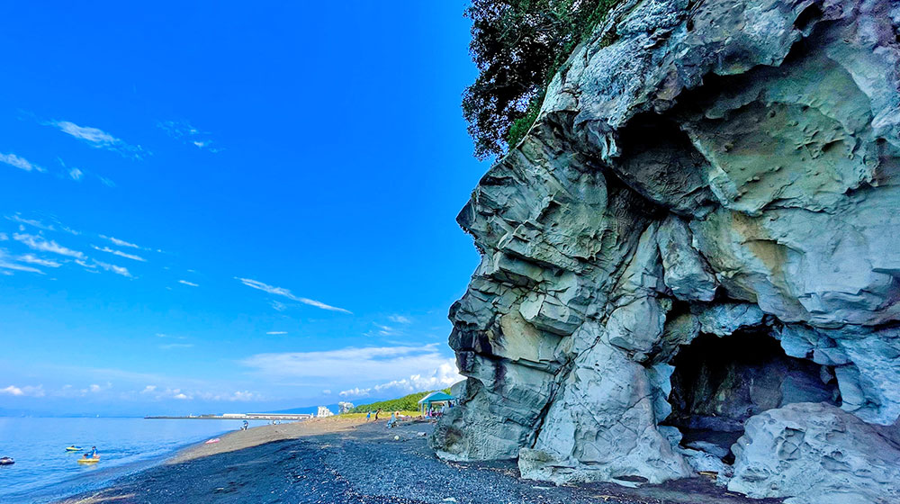
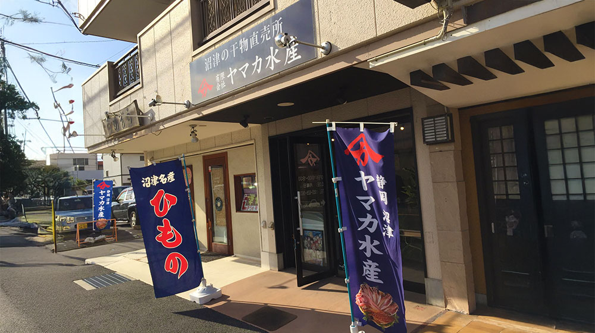
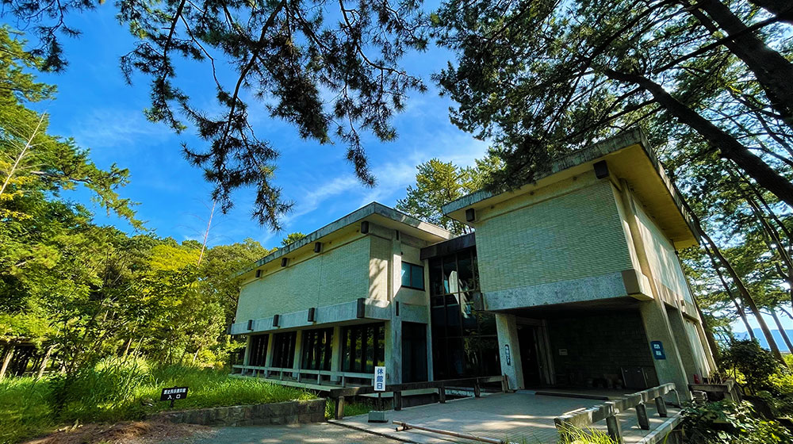

沼津港南エリア


沼津御用邸記念公園
営業時間：平・休日9:00～16:30
定休日：---
大正天皇のご静養のために開設され、その後歴代の天皇、皇后両陛下や皇族の方々に親しまれた沼津御用邸。現在は緑豊かな公園として市民の憩いの場となっています。潮騒がいざなう皇室の薫りに包まれながら散策などしてみてはいかがでしょうか。




島郷海水浴場
営業時間：24時間
定休日：---
島郷・志下海水浴場は、沼津御用邸記念公園に近接する家族連れに人気が高い海水浴場。遠浅の海岸に長さ300m、幅30mの広い砂浜があり、波が穏やかなため小さな子ども連れにはもってこい！遊泳期間中は監視員が常駐しているので安心して泳げます。

沼津文化財収蔵庫
営業時間：24時間
定休日：---
劇中では、廃校になった浦女の生徒たちが、ある理由から春より通うことになってしまった分校、という設定でした。実際には、1936年に旧東京市赤坂区（現東京都港区）が、同区にある青南小学校の改築時に出た廃材で建設したものです。1944年から翌年にかけては戦争中であるため、赤坂区の児童の疎開先になりました。

沼津市芹沢光治良記念館
営業時間：平・休日 9:00～16:30
定休日：月曜日
沼津市の名誉市民である作家・芹沢光治良は1896年に我入道で生まれます。旧制沼津中学校（現県立沼津東高等学校）、旧制第一高等学校（現東京大学教養学部）を経て東京帝国大学（現東京大学）を卒業後、官吏を経てパリに留学。帰国後の1930年に作家デビューを果たします。故郷沼津を舞台に物語が始まる大河小説「人間の運命」により芸術選奨文部大臣賞や日本芸術院賞を受賞し、日本ペンクラブ会長を務めるなど、昭和から平成にかけて国内外で活躍しました。

おばんのふところ
営業時間：24時間
定休日：---
風に鳴る碑（芹沢光治良）砂浜海岸の端に向かって歩くと、牛臥山の海食崖には「おばんのふところ」と呼ばれる海食洞窟があります。（危険個所につき潮が引いている際に自己責任で見学）

ヤマカ水産直売所
営業時間：平・休日9:00～17:00
定休日：水・日・祝
1912年創業の老舗ヤマカ水産。私たち沼津のひもの屋は、美味しい干物をつくることに情熱を持ち、約50年前から開きの技術・塩汁での味付け・乾燥方法・急速冷凍技術、全ての製造工程を研鑽し、日本一のひものを皆さんに届けたい想いでひものづくりを行ってきました。



沼津市歴史民俗資料館
営業時間：平・休日8:00～17:00
定休日：---
沼津御用邸記念公園内に位置する沼津市歴史民俗資料館は、市立の博物館であり、沼津市域を中心とした民俗・歴史資料の収集、保管、調査研究、公開、教育普及活動を行っています。